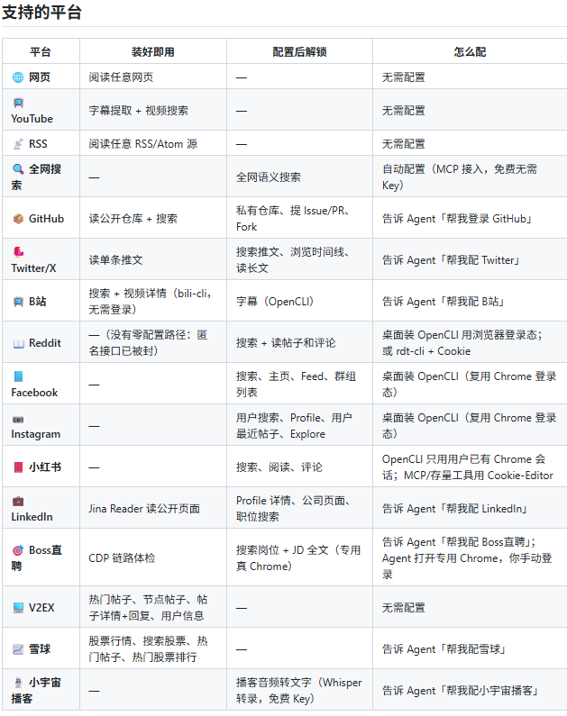

上礼拜我让我的 AI Agent 去网上找点东西，事情走向有点狼狈。
四件事，卡法各不相同：总结 YouTube 技术视频，拿不到字幕；搜推特上的评价，Twitter API 要付费；去 Reddit 翻有没有人踩过同一个坑，返回 403，服务器 IP 被拒；看一眼小红书上的口碑，打不开，必须登录。
我当时在追一个新出的 AI 工具，想看看它在各处的真实口碑：小红书上有没有人开箱、B站有没有实测视频、推特上开发者在聊什么、Reddit 上有没有人报 bug。四件事分散在四个 App 里，登录状态各管各的，我把希望押在了 Agent 身上。
四个平台，四道门槛，堵得各不相同，根子是同一个：它没有眼睛。
这种管道搭起来并不轻。每个平台一套玩法，要付费的 API、要绕的封锁、要登的账号、要洗的数据，凑齐一条能读全网的链路，本身就是一份需要长期维护的工程。接口会变、Cookie 会过期、反爬会升级，今天能跑，下个月可能就哑了。
然后我刷到了 Agent Reach。
README 第一行就是一句话定义：
Give your AI agent eyes to see the entire internet. Read & search Twitter, Reddit, YouTube, GitHub, Bilibili, XiaoHongShu — one CLI, zero API fees.
一个 CLI，零 API 费，让 AI 直接读推特、Reddit、YouTube、GitHub、B站、小红书。这个范围不小。
英文简介是给海外看的，中文定位更实在：给 AI Agent 一键装上互联网能力。作者把话说得很直，叫「当下最稳的接入方式，替你选好、装好、体检好」。「最稳」两个字容易当成营销话术，看到路由的设计才落地。
截至 2026 年 10 月，这个仓库拿到 93,293 个 star、8,173 个 fork、200 个 open issue。MIT 协议，Python 3.10+，2026 年 2 月 24 日建仓，最后一次提交在 10 月 7 日。README 顶上挂着 Trendshift 的「GitHub Trending #1 Repository of the Day」徽章，赞助商位里躺着 BrowserAct、腾讯云 OpenClaw、CoreClaw、优刻得星图。
star 数好看的项目我见多了，我更想弄清的是它到底怎么做到的。
装哪个工具、装没装好、通不通，它全管
Agent Reach 对自己的定位是一个能力层（capability layer）。这是作者原话。
常见的做法是再包一层：你调它的接口，它去调上游，数据从中间转一道手。Agent Reach 比具体实现高一层，只负责选型、安装、体检、路由，不负责底层读取本身。
真去读数据的时候，你的 Agent 直接调 yt-dlp、gh CLI、bili-cli 这些上游工具，中间不经过 Agent-Reach。它管的是装哪个工具、装没装好、通不通。
这层定位有个直接的好处：它不存你的数据。读取动作发生在你的机器和你调用的上游工具之间，Agent Reach 只维护“该用哪个”这张表。我把 Agent 当生产力工具用，这一条在隐私上是我看重的。
支持的平台
README 的平台清单一共 16 项，分成两类：装好就能用的，和需要先配登录态的。
零配置的 6 个，读的都是公开内容，不需要账号；要登录的 10 个，都得先登录才能读。

图注：README 官方平台清单，16 个平台一个 CLI 全接
清单里有几个意外之喜。Boss直聘能给到 JD 全文，这对看招聘风向的人管用；小宇宙播客走 Whisper 转录，等于把音频也纳进了搜索范围；雪球带行情、搜索和热门帖排行，投研的人会顺手。零配置的 6 个里，B站 是少见的视频平台，不用登录就能搜索、拿详情。
配登录态这一步，作者给的用法很省事：直接跟 Agent 说一句“帮我把 XXX 配好”。它知道需要什么，会一步一步引导你走完。配这几个的坑，官方排查文档里写得比较细，关键几条列在下面。
它是怎么做到的
下面这三件事，是它跟“把一堆脚本拼在一起”最大的区别。
01 每个平台都是一条备选链
这是 README 里说得最细的一块。Agent Reach 给每个平台配的是一条有序的候选后端列表：
这张表 9 个场景里有 7 个带了备选。大部分平台都不是单点依赖，某条路断了还有下一条。对一个横跨十几个平台的项目，这份冗余是它花力气最多的地方。
作者原话是：「每个平台都是『首选 + 备选』多后端路由。某个接入方式失效了，我们换下一个，你无感。」
这句话背后有一条真实的换代记录。2026 年 6 月，实测 yt-dlp 被 B站风控 412 封死，项目随即切到 bili-cli，用户这边零操作。顺带说一句，yt-dlp 本身是个 15.4 万 star 的项目，连它都被封了，说明平台的反爬一直在变。2026 年 3 月，还有一批单平台 CLI 集体停更，路由也跟着调过。
“多后端”就是为这种情况准备的：单个接入点一定会老旧、会失效，首选坏了就换备选。
探测方式 README 也写了：每个渠道文件按序真实探测各候选后端，第一个完整可用的才当选，光命令存在不算数；坏掉的会给出修复处方。平台的反爬一动，路由就得跟着换。
02 doctor：先体检，再干活
agent-reach doctor 这条命令，是它和一堆“装了但不知道通不通”的脚本最不一样的地方。
一条命令下去，它告诉你每个渠道通还是不通、当前走的是哪条后端、不通的怎么修，16 个渠道一屏看完，红的绿的清清楚楚，哪条通了、哪条还差凭据，一眼看得到。
配置登录态，在它这里从“盲盒”变成了“清单”。
03 默认只检查，不动你的系统
agent-reach install 的默认行为是只检查环境、列出缺失项，不改系统、不写配置。只有显式加上 --system，它才会装依赖、写配置、注册 SKILL.md。想先看看会发生什么，加 --dry-run 预览。
卸载也是对称的：agent-reach uninstall 会清掉 ~/.agent-reach、各 Agent 的 skill 文件、mcporter 里的 MCP 配置；--dry-run 先预览，--keep-config 保留凭据。
凭据只存本机 ~/.agent-reach/config.yaml，权限 600，只有所有者能读写，同机器上的其他账号读不到，不上传不外传，代码开源可审查。
装起来有多简单
官方的装法是一句话，把这句话甩给你自己的 Agent 就行：
帮我安装 Agent Reach：https://raw.githubusercontent.com/Panniantong/agent-reach/main/docs/install.md更新同理，把 install.md 换成 update.md。
手动装也清爽，官方推荐 pipx：
pipx install https://github.com/Panniantong/agent-reach/archive/main.zipagent-reach install --env=auto
它兼容任何能跑命令行的 Agent：Claude Code、OpenClaw、Cursor、Windsurf 都在列。
这套设计里我最认同的一点，是把安装直接交给 Agent 完成，人不用去猜依赖链。人只要复制一句话，剩下的引导、判断、修复由 Agent 和文档一起兜住。对一个要长期塞进工作流的工具，安装门槛压到这一步，试错成本就跟着降下来。
适合什么人用
能对上这些场景的人不窄。只要工作里有一个“去某个平台看看”的动作，它就能省掉这一步。
做内容的人，可以让 Agent 顺手把某个话题在小红书、B站、推特上的讨论一起捞回来，不用一个个 App 切来切去。
做选品的，可以去小红书看真实评价，去 Reddit 查海外同款的口碑。
做投研的，雪球行情、Boss直聘的 JD 全文、LinkedIn 的公开信息，都能一起看。
个人创作者，想让 AI 帮自己盯着某个话题在几个平台上的动静，也能用上。
小团队的运营，或者给 AI 做工具的开发者，可以把它当成一块现成的基础设施接进去。已经在用某个 Agent 平台的话，接进去的成本基本就是一句话加几条登录态。
它对应的场景很具体：你有没有“让 AI 去某个平台看一眼”这种需求。有的话，配置活它替你干。需求越碎、平台越多，它省下的越多；只盯着一个平台、一个固定动作的，自己写几行也够。
写在最后
93,293 个 star，8,173 个 fork，MIT 协议，一个 CLI。这个体量已经不太需要额外的推荐。
README 里的赞助商位也是个信号。浏览器自动化、云厂商、Agent 平台都在赞助商位上，说明它已经过了“个人练手”阶段。作者写过他每天在用这个项目，会一直维护下去。活跃和待办是同时存在的，200 个 open issue 挂着，最后一次提交停在 2026 年 10 月 7 日。
让我把它写下来的，是 B站 后端被替换：平台封了你，项目替你换了条路，你什么都没干。
开源地址：https://github.com/Panniantong/Agent-Reach
互动：你自己被哪个平台的登录门槛、风控或付费 API 卡得最久，是 Twitter 的付费 API、小红书的登录、Reddit 的 403，还是某个我没提到的平台？说一个具体的平台加具体场景，我挑几条看看用 Agent Reach 能不能接上。
作者：ray